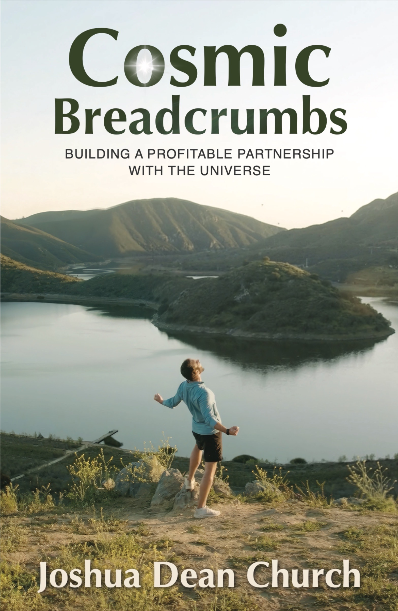

Building a Profitable Partnership with The Universe

What if the life you're seeking is already seeking you?
Cosmic Breadcrumbs is a spiritual memoir and founder's journey by Forbes 30 Under 30 entrepreneur Joshua Church.
After years of chronic pain that culminated in a life-altering health crisis, Joshua set out to heal his body and discover his purpose. What followed was not a straight line, but a quiet trail of signs, setbacks, and synchronicities—breadcrumbs that slowly revealed themselves as he learned how to listen.
That same path would guide him to build a $20 million company in under three years. And later, it would lead him through the collapse of the business, exposing what success alone could not teach.
"A story about what happens when you follow the breadcrumbs instead of the plan."
Part memoir, part manifesto, part love letter to anyone who's ever felt like they were meant for more but didn't have the language for it yet. Cosmic Breadcrumbs traces the through line between pain, purpose, and the cosmic breadcrumbs that connect them.
From a doctor telling a seventeen-year-old to pick up golf, to co-founding a company that would change an industry, to finishing an Ironman, to learning that the real intelligence was inside all along—this is the story of what happens when you stop trying to control life and start collaborating with it.